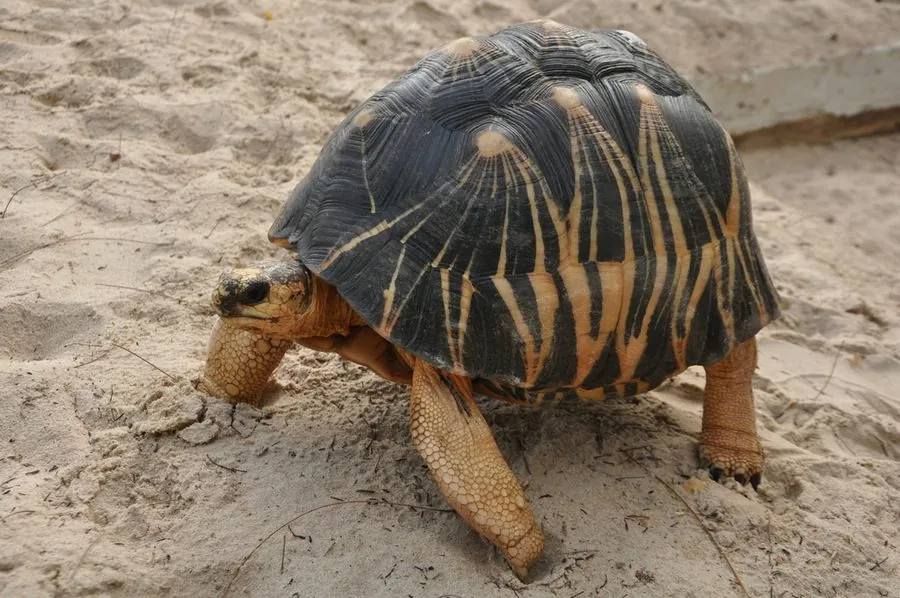

爬行动物 · 动物界
辐射陆龟 Astrochelys radiata

马达加斯加南部的陆龟，背甲黑色底上放射出十二条黄色条纹如星芒，因花纹艳丽被大量走私，野生种群持续锐减。
- 分类
- 门脊索动物门纲爬行纲目龟鳖目科陆龟科属星丛龟属
- 栖息环境
- 马达加斯加南部的干旱多刺林、灌丛、沙质草地与珊瑚石灰岩台地
- 地理分布
- 马达加斯加岛南部与西南部，包括阿齐莫—安德列法纳地区
- 保护级别
- IUCN 极危（CR）；CITES 附录Ⅰ
物种志
辐射陆龟背甲高隆，长可达 40 厘米，体重 8–16 千克。背甲底色深黑，每块盾片中央有橙黄色斑，从斑心向外放射出鲜明的黄色条纹，形成星芒状图案，因此得名“辐射陆龟”；头部较小，呈黄色，头顶有一块黑色鳞片。雌龟背甲较扁平，雄龟尾较长且腹甲略凹。
它们仅分布于马达加斯加岛南部与西南部的干旱多刺林、灌丛与沙质草地，以草、嫩叶、果实、仙人掌与腐肉为食，可以长时间不饮水，靠食物与露水补充水分。雌龟每年 1–4 月产卵，每窝 3–12 枚，孵化期约 5–8 个月，幼龟成活率低。由于花纹艳丽，它在国际宠物市场上需求极高，加之栖息地被放牧与开垦破坏，其野生种群在近数十年下降过半，成为全球走私量最大的龟类之一。马达加斯加已立法禁止出口，并设有保护区。
形态与习性
- 背甲长约 30–40 cm，体重 8–16 kg
- 食性草、嫩叶、果实、仙人掌与腐肉
- 繁殖1–4 月产卵，每窝 3–12 枚，孵化约 5–8 个月
- 花纹黑色底甲上放射出十二条左右黄色条纹，形似星芒
- 耐旱能力可长时间不饮水，靠食物与露水补充水分
- 种群现状近数十年野生种群下降过半，为国际走私量最大的龟类之一
- 寿命可达 100 年以上
趣味知识
- 辐射陆龟的背甲像一枚黑色底、镶着黄色星芒的棋子。
- 它在国际宠物黑市上极受欢迎，是走私量最大的龟类之一。
- 它能靠仙人掌和露水度日，在干旱的多刺林里也能活得很好。